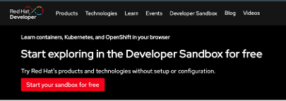

Red Hat Developer Sandbox
誰でも手軽にOpenShiftを体験できるクラウドベースの環境です。
Developer SandboxはOpenShiftの共有環境を30日間利用できる仕組みで、自身で作成したアプリケーションをデプロイしたり、チュートリアルにしたがってOpenShiftの利用体験をすることができます。
対象製品は、 * Red Hat OpenShift * Red Hat Dev Spaces * Red Hat OpenShift AI
下記リンクからアクセスして、利用したい製品を選択します。 https://developers.redhat.com/developer-sandbox

事前にRed Hatアカウントの登録が必要となります。